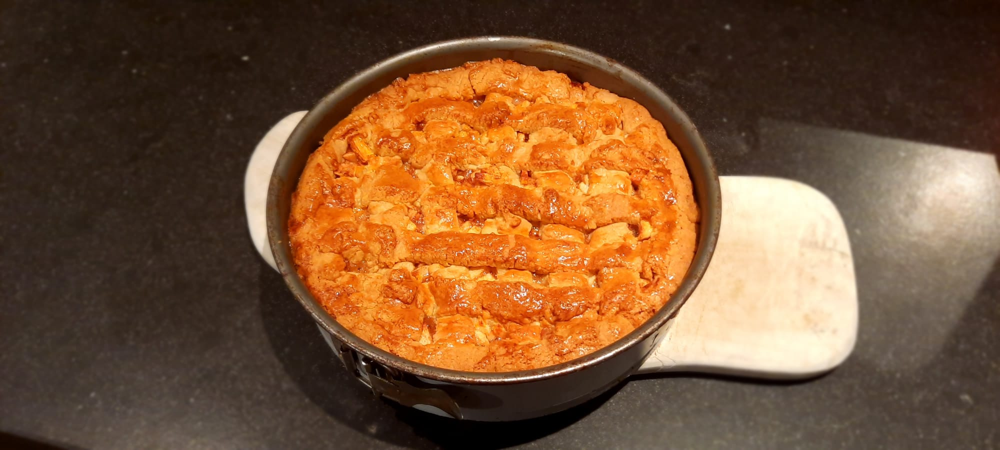
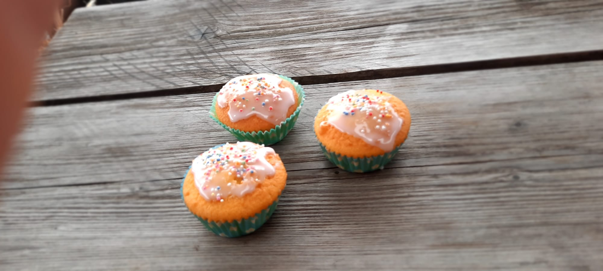
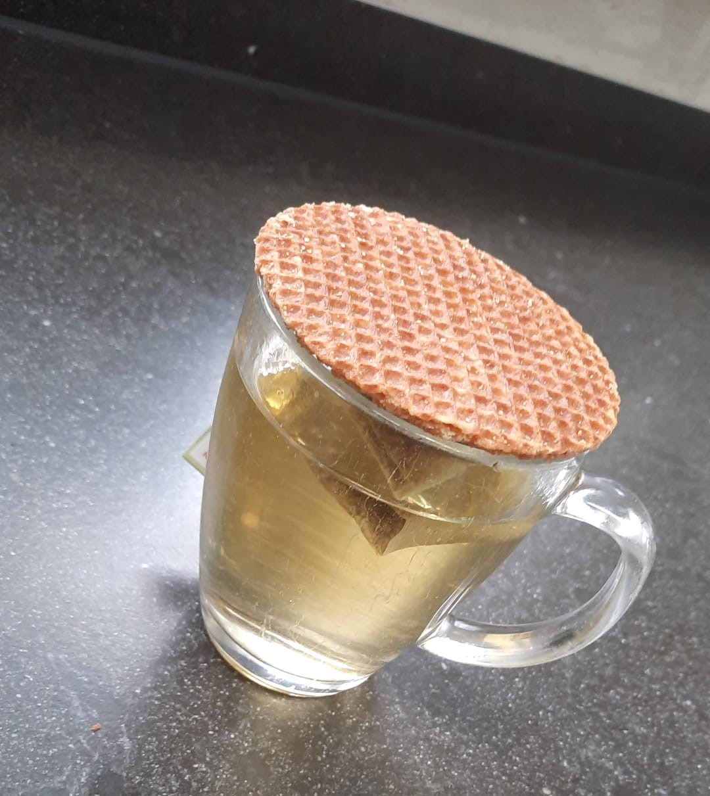

De grootste cupcake op aarde maarliefst 1176 kilo woog?
Wist je dat?
Je in plaats van een koekjesvorm je ook een glas kan gebruiken?
Wist je dat?
Je 1 Amerikaanse cup gelijk staat aan 240 ml? Zo kun je ook recepten volgen uit Amerika!
Wist je dat?
Het zeven van meel en bloem voor meer luchtigheid zorgt in het gerecht? Als je dus van luchtige baksels houdt zou je hier gebruik van kunnen maken!
Wist je dat?
Gelukskoekjes oorspronkelijk uit Californië komen, en dus helemaal niet uit China?
Wist je dat?
Stroopwafels in Australië Coffee toppers worden genoemd? Dit komt omdat ze de stroopwafels laten opwarmen door ze bovenop hun koffie te leggen.
Wist je dat?
Wanneer je een warm kopje over een blok koude roomboter legt, dat deze sneller zacht wordt? Hierdoor is het beter te mixen.
Met deze tabel kun je gemakkelijk cups vergelijken met milliliter:
Cups
ML
1/8
30
1/4
60
1/3
80
1/2
120
1
240
1 1/2
360
2
480

Deze appeltaarten maken wij meestal in Nederland.

Hoeveel denk je dat deze cupcakes wegen?

Zo krijg je een lekkere warme stroopwafel bij de thee.